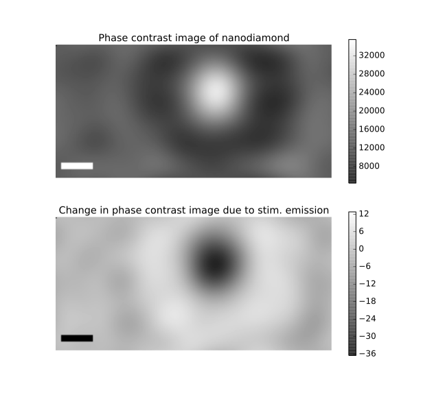

Stimulated Emission Imaging
This project is maintained by Sanjay R. Varma and was funded by Calico Labs
Appendix
Stimulated Emission Imaging
Fluorescent samples and mounting
Phase contrast microscope diagram
The experiment setup schematic in Figure 2B of the online version of the main article contains all schematics used. The print/pdf version only includes the dark-field imaging schematic. Figure S2 below is the phase contrast imaging schematic.


Parts list
Crimson dyed polystyrene bead fluorescence
The fluorescence saturation and depletion plot in Figure 3 of the online version of the main article contains data from nanodiamonds doped with nitrogen vacancy (N-v) centers and from crimson fluorescent dyed polystyrene beads. The print/pdf version only includes the N-v center data. Figure S4 below is the phase contrast imaging schematic.

/figure_generation/figure_3.py and /figure_generation/figure_3b.py.Axial view of fluorescence from a nanodiamond doped with N-v centers
Controls for thermal effects due to the excitation laser
The change in scattered light signal depends on the duration of the excitation and stimulation laser pulses
Change in the phase contrast image of a nanodiamond due to excitation

Figure S3: Phase contrast nanodiamond image and stimulated emission signal. Scale bar: 250 nm. This figure's images were generated by
| Phase plate angle #: | (Adjust the phase of the transmitted light relative to scattered light) |
/figure_generation/figure_S3.py.